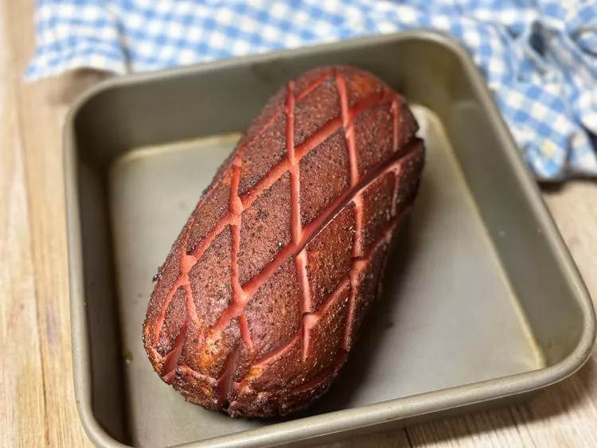

Smoked Bologna

Description
Ingredients
-
5 pounds bologna;
-
1/4 cup all-purpose rub or your favorite BBQ rub.
Steps
- Prepare an outdoor smoker to 250 degrees F (121 degrees C) using your choice of wood. I prefer oak or hickory but cherry works well, too.
- Score the bologna chub in a crosshatch pattern with a sharp knife 1/2-inch deep and 1-inch apart around the entire chub. Sprinkle with rub, and massage rub into all of the scores. Place chub directly on the smoker grate.
- Smoke in the preheated smoker for 3 hours. Transfer to a cutting board and let rest for 30 minutes.
- Slice and serve on sandwiches. Or, slice and pan fry for fried bologna sandwiches.
This smoked bologna method turns an ordinary chub of bologna into something spectacular, a poor man's ham, so to speak. This will make the best fried bologna sandwich you've ever had.
Home